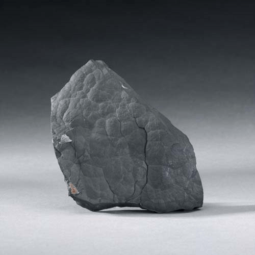

Arsenic - As
Native Elements


Habit: Tin-white, tarnishing to dark gray, crystals rare. Usually massive, reniform or stalactitic, often with concentric layers. Metallic Luster; opaque.
Environment: Typically found in Hydrothermal veins, generally associated with antimony, silver, cobalt and nickel-bearing minerals.
Etymology: From the Greek word, arsenikos, meaning "potent"or "masculine"which was used to describe orpiment, an arsenic sulphide. The word was adopted in Latin, arsenicum.